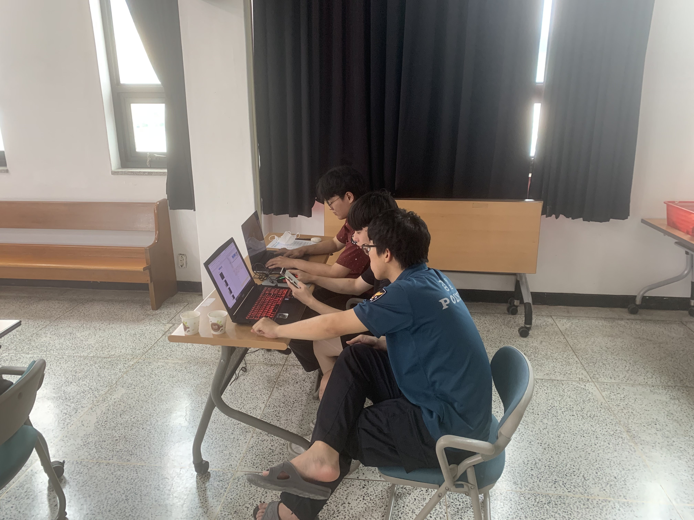

주제 선정 동기

주제 선정 동기
|  | 사회복무요원으로 경찰서에서 군생활을 한 저는 전공을 살려서 민간인, 사회복무요원,의경이 함께 웹 페이지를 제작한 경험이 있습니다. 당시 제작한 웹 페이지는 탄력순찰제의 홍보 및 신청받는 사이트로서 지역민들의 불편한 상황 혹은 불안한 상황을 조사받았고 실제로 주취자에 의한 훼손된 장소의 복원 및 벽화를 그리고 조명을 설치함으로서 범죄율을 감소시키는 ""셉테드" 효과의 장소 선정에 있어 큰 효과를 얻은 경험이 있습니다. 이런 경험을 통해 경찰이라는 직업과 그 업무에 흥미를 느끼게 되었고 그렇기 때문에 경찰청으로 주제를 잡게 되었습니다. |